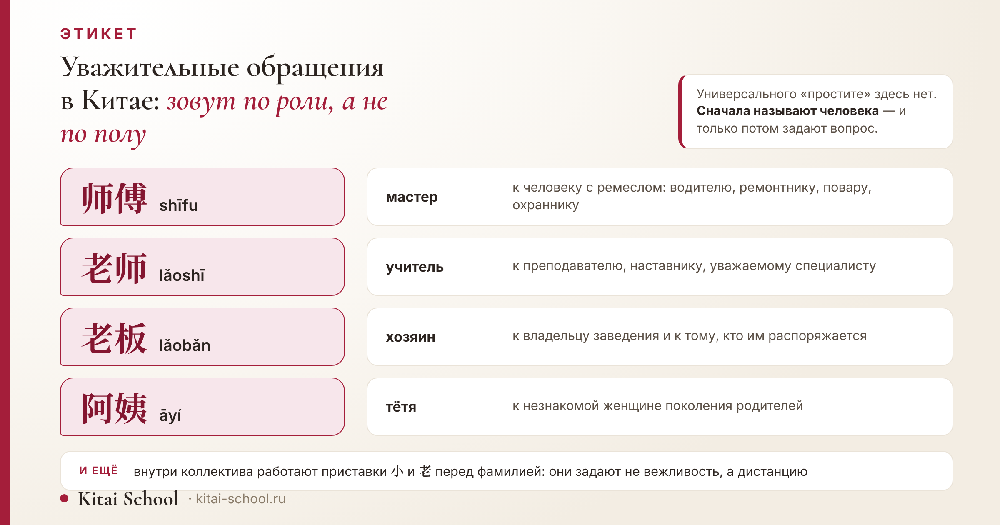
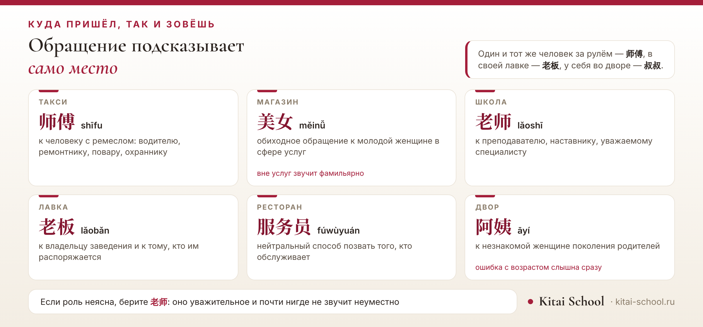

Этикет
Уважительные обращения в Китае: 师傅, 老师, 老板 и логика вежливости


Первая трудность разговора по-китайски обычно не в словах, а в том, как человека окликнуть. В русском выручает «простите» или «извините», и дальше можно говорить что угодно. В китайском такого универсального входа нет: обращение сразу сообщает, кем вы считаете собеседника — мастером, учителем, хозяином заведения, старшим во дворе. Выбор делается не по полу и возрасту, а по роли и месту, и научиться этому проще, чем кажется: рабочих обращений немного, и каждое закреплено за понятной ситуацией.
Обращаются по роли. К водителю, мастеру, повару — 师傅 (shīfu). К преподавателю и наставнику — 老师 (lǎoshī), и далеко не только в школе. К хозяину лавки — 老板 (lǎobǎn). К незнакомым людям поколения родителей — 阿姨 и 叔叔. В ресторане — 服务员. Внутри коллектива работают приставки 小 и 老 перед фамилией. Вежливого 您 недостаточно: это местоимение, а не обращение.
Короткий ответ: обращаются по роли
Главное правило одно, и оно снимает большую часть вопросов.
Обращение выбирают по тому, чем человек занят и где вы находитесь, а не по тому, мужчина перед вами или женщина и сколько ему лет. Один и тот же человек за рулём такси будет 师傅, в своей лавке — 老板, а во дворе собственного дома — 叔叔.
Отсюда и ответ, почему разговорники не помогают. Они дают список слов с переводом, а выбор зависит не от перевода, а от ситуации.
Сразу скажу, чего здесь не будет. Разбора 先生, 女士 и 小姐, устройства китайского имени и того, когда можно обращаться по имени, — всё это у нас в отдельной статье: как обращаться к китайцам по имени или фамилии. Обращений в деловом письме — здесь: деловое письмо китайскому партнёру.
Почему 您 недостаточно
Первое, что узнают про вежливость в китайском, — местоимение 您 (nín).
Оно действительно вежливое, но задачу не решает. 您 — это «вы» вместо «ты», то есть выбор формы внутри уже начатого разговора. Окликнуть человека местоимением нельзя: нужно слово, которым вы его назовёте.
Разница видна на простом примере. Чтобы спросить дорогу, по-русски достаточно «извините»; по-китайски вы сначала называете человека — 师傅, 老师, 阿姨, — а уже потом задаёте вопрос. Само местоимение и его пару 咱们 мы разбирали отдельно: местоимения в китайском языке.
师傅: мастер и водитель
Если запоминать одно обращение, пусть это будет оно.
师傅 (shīfu) — «мастер», человек с ремеслом. Так обращаются к водителю такси, ремонтнику, электрику, повару, охраннику, мастеру в сервисе — к любому, чья работа требует умения.
Чем оно удобно: не требует знать имя, не звучит ни панибратски, ни сухо и подходит человеку любого возраста. Для туриста это самое рабочее слово: с него начинается разговор с таксистом, с мастером в мастерской, с охранником у ворот.
| Знаки | Чтение | Перевод | К кому | Оговорка |
|---|---|---|---|---|
| 师傅 | shīfu | мастер | к человеку с ремеслом: водителю, ремонтнику, повару, охраннику | — |
| 老师 | lǎoshī | учитель | к преподавателю, наставнику, уважаемому специалисту | — |
| 老板 | lǎobǎn | хозяин | к владельцу заведения и к тому, кто им распоряжается | — |
| 阿姨 | āyí | тётя | к незнакомой женщине поколения родителей | ошибка с возрастом слышна сразу |
| 叔叔 | shūshu | дядя | к незнакомому мужчине поколения родителей | ошибка с возрастом слышна сразу |
| 服务员 | fúwùyuán | официант | нейтральный способ позвать того, кто обслуживает | — |
| 美女 | měinǚ | красавица | обиходное обращение к молодой женщине в сфере услуг | вне услуг звучит фамильярно |
| 帅哥 | shuàigē | красавчик | обиходное обращение к молодому мужчине в сфере услуг | вне услуг звучит фамильярно |

У 师傅 есть и второе значение — наставник в ремесле, тот, у кого учатся. Отсюда и уважительный оттенок: вы признаёте за человеком умение, а не просто окликаете его.
老师: не только учитель
Второе по полезности обращение — и первое по числу недоразумений.
老师 (lǎoshī) переводится как «учитель», но употребляется гораздо шире школы. Так обращаются к преподавателю, наставнику, редактору, врачу, старшему коллеге — к человеку, у которого учатся или чьё мнение ценят.
Для русскоязычного это непривычно: у нас «учитель» привязано к школе, и назвать так редактора или врача странно. В китайском такой привязки нет, и ошибкой обращение не будет, даже если собеседник никогда не преподавал.
Где это особенно выручает: на конференции, в университете, в переписке со специалистом, имени которого вы не знаете. Обращение уважительное, но не заискивающее.
小 и 老 перед фамилией
Внутри коллектива работает отдельная пара приставок, и они задают не вежливость, а дистанцию.
- 小 (xiǎo) с фамилией — к ровеснику или младшему: так зовут молодого коллегу, с которым общаются каждый день.
- 老 (lǎo) с фамилией — к старшему или к тому, кто работает рядом давно. Возраст здесь не единственное: «老» означает и «давно знакомый».
Обе формы годятся только внутри своего круга. Посторонний человек так не обращается: это звучало бы по-свойски без оснований. Зато внутри коллектива они работают лучше любого официального варианта.
Ученик устроился в китайскую компанию и первые недели звал коллег по фамилии с 先生 — так было в разговорнике. Над ним беззлобно подшучивали, а он не понимал почему: вежливо же.
Разобрали на занятии. Внутри коллектива так не говорят: это обращение к человеку со стороны, к клиенту или гостю. Своим оно сообщает ровно обратное — что вы держите дистанцию и чувствуете себя чужим.
Что принято вместо этого: к ровеснику и младшему — 小 с фамилией, к старшему и давно работающему — 老 с фамилией, к руководителю — фамилия с должностью.
Через неделю он сказал, что разговоры пошли легче, и дело было не в словах: обращение перестало каждый раз обозначать границу между ним и остальными.
Вывод, который я из этого делаю: обращение сообщает не только вежливость, но и то, насколько вы здесь свой. Слишком вежливое — такой же промах, как слишком простое.
Добавлю то, чего в истории нет. Переход на 小 или 老 обычно происходит сам: вас начинают так звать, и это знак, что вы стали своим. Первым переходить не нужно — достаточно заметить, когда это случилось.
老板: хозяин заведения
Третье обращение — для тех мест, где есть владелец.
老板 (lǎobǎn) — «хозяин». Так обращаются к владельцу лавки, ресторана, мастерской, небольшой фирмы — и к тому, кто в этом месте распоряжается, даже если формально он не собственник.
Слово звучит дружелюбно и слегка льстит: вы признаёте за человеком, что место — его. На рынке и в маленьких магазинах это обычный способ начать разговор, в том числе перед торгом.
Чего с ним не стоит делать: обращаться так к наёмному сотруднику большой компании. Там это прозвучит с подтекстом, а при начальнике — и вовсе неловко.
Ещё одна тонкость — торг. На рынке обращение 老板 часто открывает разговор о цене: вы признаёте за человеком право решать, а значит, и право уступить. Это не гарантия скидки, но начало беседы получается другим, чем с молчаливого «сколько стоит».
阿姨 и 叔叔: к незнакомым старшим
Обращения, которые приходят из семьи, но работают далеко за её пределами.
阿姨 (āyí) — «тётя», 叔叔 (shūshu) — «дядя». Так обращаются к незнакомым людям поколения ваших родителей: к соседке во дворе, к продавщице на рынке, к консьержу, к водителю автобуса.
Родственником собеседник при этом не считается — это способ поставить его в понятную роль: человек старше вас, но не старик.
Главная осторожность — с возрастом. Назвать 阿姨 женщину, которая считает себя молодой, — заметный промах; ошибку слышно сразу. Если сомневаетесь, лучше взять обращение по месту: в магазине — по роли продавца, в такси — 师傅.
Для случая «немного старше вас, но не поколение родителей» есть промежуточный вариант: 大姐 (dàjiě) и 大哥 (dàgē), буквально «старшая сестра» и «старший брат». Звучит теплее, чем 阿姨, и не задевает возраст — но и дистанция здесь меньше, поэтому в официальной обстановке так не обращаются.
美女, 帅哥 и 服务员: сфера услуг
Отдельная группа обращений, с которой иностранцы чаще всего попадают впросак.
美女 (měinǚ) — «красавица», 帅哥 (shuàigē) — «красавчик». В магазинах, салонах и на рынках это обиходные обращения к молодым людям, и ничего особенного в них не слышится.
Но за пределами сферы услуг они не работают. В офисе, на переговорах, с незнакомым человеком на улице это звучит фамильярно. Правило простое: уместно там, где кто-то кого-то обслуживает, и неуместно всюду ещё.
В ресторане надёжнее 服务员 (fúwùyuán) — «официант». Это нейтральное слово, которым зовут того, кто обслуживает столик; произносится громко и никого не задевает.
Рядом стоит ещё одно слово, которое слышно каждый день: 小哥 (xiǎogē), «паренёк». Так обращаются к молодому мужчине, который что-то привозит или подаёт, — курьеру, доставщику еды. Оно дружелюбное и обиходное, но, как и 美女, остаётся внутри сферы услуг.
同志: почему так больше не говорят
Слово, которое многие помнят по старым фильмам и книгам.
同志 (tóngzhì) — «товарищ». В обиходе оно вышло из употребления: сегодня так не окликают ни на улице, ни в магазине.
Вторая причина быть осторожнее — у слова появилось разговорное значение, не связанное с прежним. Специально его разбирать не буду; достаточно знать, что в живой речи это обращение не используют, и выбрать любое из перечисленных выше.
Если не знаете, как обратиться
Три выхода, которые работают почти всегда.
- Смотрите на место. Такси и мастерская — 师傅, лавка — 老板, ресторан — 服务员, университет — 老师.
- Если роль неясна, возьмите 老师. Оно уважительное и почти нигде не звучит неуместно, кроме сферы услуг.
- Начните с фразы, а не с обращения. 请问 (qǐngwèn), «позвольте спросить», даёт время осмотреться: оно вежливое и не требует называть человека.
И последнее из практики: если обратились не так, вас поправят мягко или не заметят вовсе. Иностранцу прощают почти любой промах в обращении — кроме обидного, вроде 阿姨 ровеснице.
Есть и запасной приём для совсем безвыходных случаев: обратиться по месту работы человека. 服务员 в кафе, 师傅 у машины, 老板 за прилавком — роль видна по тому, где человек стоит, и ошибиться здесь почти невозможно.
Частые ошибки русскоязычных
- Искать универсальное «простите». Обращения без называния роли в китайском нет; ближе всего 请问, но и оно не заменяет обращение целиком.
- Обращаться по полу и возрасту. Это главный источник промахов: смотреть нужно на роль и место.
- Переносить 先生 в коллектив. Внутри своих это звучит как обращение к клиенту с улицы.
- Звать 美女 вне сферы услуг. В магазине это обиход, в офисе — фамильярность.
- Считать, что 您 решает всё. Местоимение не заменяет обращения: окликнуть им нельзя.
Шестое не ошибка, а наблюдение: рабочих обращений всего несколько. Выучить их быстрее, чем разобраться в системе родства или в должностях, а в разговоре они дают больше, чем десяток заученных фраз.
Чего в статье нет намеренно
- Нет разбора 先生, 女士 и 小姐 — им посвящена отдельная статья, и пересказывать её незачем.
- Нет устройства китайского имени и правила «когда можно по имени»: это там же.
- Нет обращений в деловом письме и сокращений должностей — у статьи про деловое письмо.
- Нет разбора местоимения 您: про него у нас написано в статье о местоимениях.
- Нет системы терминов родства: обращения 阿姨 и 叔叔 здесь взяты только как обращения к посторонним.
- Нет региональных различий по провинциям: подтверждений по каждому региону у меня нет.
- Нет цифр о том, какое обращение встречается чаще: корпусных подсчётов нет.
И общее. Обращение в китайском — это не формула вежливости, а способ назвать роль собеседника. Поэтому выбирать его проще не из списка слов, а из вопроса «кто передо мной и где мы находимся» — ответ почти всегда подсказывает само место.
Обращения ставятся на первых же занятиях — вместе с разговором, а не отдельным списком: онлайн-курсы китайского. Оставить заявку или написать в Telegram.
Частые вопросы (FAQ)
Как вежливо обратиться к незнакомому человеку в Китае?
Смотреть нужно не на пол и возраст, а на роль и место. К водителю, мастеру или повару — 师傅 (shīfu). К владельцу лавки — 老板 (lǎobǎn). К человеку поколения ваших родителей во дворе или на рынке — 阿姨 (āyí) или 叔叔 (shūshu). В ресторане зовут 服务员 (fúwùyuán). Универсального слова вроде нашего «простите» здесь нет.
Что значит 师傅 и к кому так обращаются?
师傅 (shīfu) переводится как «мастер» и обращено к человеку, у которого есть ремесло: водителю такси, ремонтнику, электрику, повару, охраннику. Оно удобно тем, что не требует знать имя и не звучит ни панибратски, ни сухо. Это самое рабочее обращение для туриста.
Можно ли называть 老师 не учителя?
Да, и это обычное дело. 老师 (lǎoshī) употребляется шире школы: так обращаются к преподавателю, наставнику, редактору, врачу, старшему коллеге — к человеку, у которого учатся или чьё мнение ценят. Обращение считается уважительным и ошибкой не будет, даже если собеседник не преподаёт.
Чем 小王 отличается от 老王?
Приставкой, которая задаёт дистанцию. 小 перед фамилией — к ровеснику или младшему, 老 — к старшему или к тому, кто давно работает рядом. Обе формы годятся только внутри своего круга: посторонний человек так не обращается, это звучало бы слишком по-свойски.
Нормально ли сказать 美女 продавщице?
В сфере услуг — да, это обиходное обращение, которое слышно в магазинах и на рынках; мужской вариант 帅哥 (shuàigē). За пределами услуг так лучше не говорить: в офисе, на переговорах или с незнакомым человеком на улице это звучит фамильярно.
Достаточно ли говорить 您?
Нет. 您 — вежливое местоимение, оно решает только вопрос «ты или вы», а обращения не заменяет: окликнуть человека местоимением нельзя. Про само местоимение и его пару 咱们 у нас есть отдельный разбор в статье о местоимениях.
Пусть разговор начинается легко! 加油！
Источники
- Список обращений не набран руками. Знаки, чтение, перевод, место и оговорки хранятся в одном файле данных, который при сборке страницы читают и таблица в тексте, и реплики на обложке, и карта мест.
- Что проверяется на сборке: знаки не повторяются, у каждого обращения задано место и сказано, к кому оно, у двух обращений из сферы услуг стоит пометка об ограничении, а 先生, 女士 и 小姐 в данные не попадают — они разобраны у соседа.
- Значения и употребление даны по описаниям обиходной речи: 师傅 — к человеку с ремеслом, 老师 — шире школы, 老板 — к хозяину заведения, 阿姨 и 叔叔 — к незнакомым старшим.
- Ограничение по сфере услуг для 美女 и 帅哥 названо прямо: внутри услуг это обиход, вне — фамильярность.
- Про 同志 сказано только то, что в обиходе оно вышло из употребления и у слова есть второе, разговорное значение; разбирать это значение не стала.
- Чего здесь нет: региональных различий по провинциям и цифр частотности — подтверждений и подсчётов у меня нет.
- 先生, 女士 и 小姐, устройство имени, деловое письмо и местоимение 您 разобраны в отдельных наших статьях, ссылки стоят по ходу текста.
- Случай с коллегами — из занятий Kitai School; имени ученика, компании и города не называю.